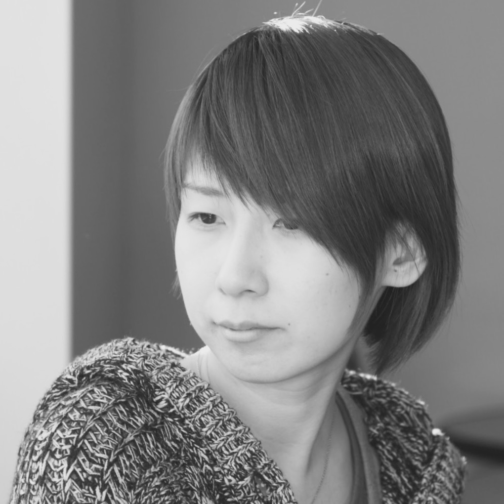

Aya Takaki`s Profile

| 名前 | 高木 彩 |
|---|---|
| 生年月日 | 平成1年11月1日 |
| 在住地 | 東京都 |
| 出身地 | 熊本県 |
| 簡易経歴 | ・大分県立芸術文化短期大学美術科卒業
・書店の販売スタッフを担当(勤続期間：4年1ヶ月) ・客先常駐にてマークアップエンジニア・コーディングを担当 (勤続期間：3年7ヶ月) ・ECパッケージの受託開発企業にてディレクター兼コーダー兼QAを担当（勤続期間：2018年8月から現職） |
| 現職の主な担当プロジェクト | 受託開発
・ECパッケージ（BtoB・BtoC）の新規サイト構築・改修のフロント開発・試験・設計補助 |
| 現職の主な担当 | ・ディレクター：Webサイト構築のディレクション、デザイン設計、デザイン納品管理、開発設計
・コーダー：ガイドラインに基づくコーディング、クロスブラウザ対応、既存コーディングファイルの修正 ・QAエンジニア：品質管理、Webサイトを実際に操作しての動作検証、結合試験、試験項目書作成 |
| 開発スキル・経験ツール | HTML / CSS / SCSS / Javascript / jQuery / Bootstrap / ASP.NET（C#、VB） / SQLServer / WordPress / MovableType / SITE PUBLIS / Dreamweaver / Photoshop / Atom / VS code / VisualStudio / Git / SourceTree / Subversion / Backlog / Redmine / Slack / ChatWork |
| 趣味 | カメラ / ボードゲーム |